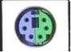
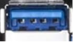
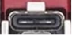
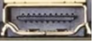
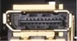
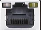
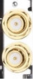
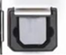
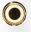
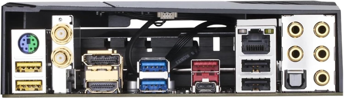

|
|
| 15. Conectores traseros |
Son los conectores que expone al exterior la placa base. Esto permiten conectar periféricos que están fuera de la caja. Entre los conectores que se ven en la imagen estan.
- Conector PS/2: Es un conector antiguo para teclado y raton. Actualmente en desuso

- Conector USB: Universal Serial Bus, para conectar teclados ratones, memorias usb, tarjetas de sonidos, moviles.
 
- HDMI: High Definition Multimedia Interface. Es para conectar el monitor.

- DisplayPort: Otro tipo de conector para el monitor.

- Conector RJ45: Es un conector para transferir datos por ejemplo desde internet.

- Conector Antenas WIFI.

- SPDIF: Sony Philips Digital Interface. Es un interfaz de audio digital para equipos de audio semi-profesionales. Normalmente se utiliza un conector Toslink que emite una luz roja.

- Mini Jack: Un conector para una clavija de cascos, altavoces domesticos o microfonos. Si hay varias suelen utilizarse para los diversos canales de equipos 5.1 o 7.1.

|
|

|
| Figura 1: Conectores traseros |

|
|
|